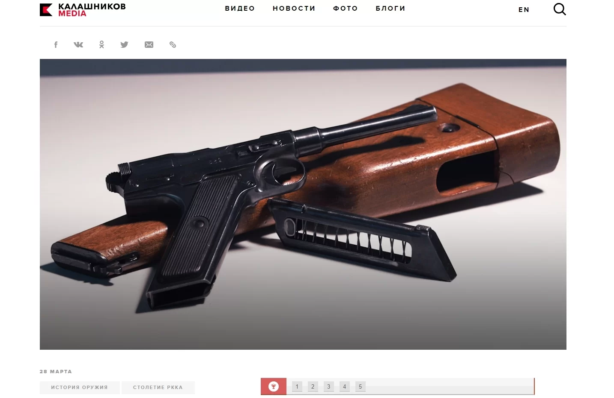

Изображения обогащают текст, подтверждают сказанное и помогают быстрее и лучше понять материал. Делимся советами, как привлечь внимание читателя, грамотно расставить акценты и выделить главное.
Сочетание «картинка + текст» выигрывает даже у видео, поскольку позволяет практически мгновенно составить представление о содержании. Изображения решают самые разные задачи:
- Сообщают характер и тему — это работа заглавной картинки.
- Улучшают подачу материала — это задача иллюстраций в материале. Они должны усилить, подтвердить или заменить текст там, где это необходимо.
- Привлекают внимание и вызывают отклик — картинки в соцсетях используют для эмоционального вовлечения.
Чтобы картинка не мешала, а, наоборот, помогала лучше воспринимать информацию на странице, она должна быть качественной. Объясняем, что это значит.
Требования к изображениям
Высокое разрешение при оптимальном размере
Некоторые CMS автоматически оптимизируют изображения — уменьшают их разрешение и вес, чтобы страница сайта прогружалась быстро. Однако далеко не все, поэтому лучше оптимизируйте изображения вручную с помощью специальных сервисов.
Для полноэкранной картинки минимальный размер составляет 1600 пикселей по широкой стороне, оптимально подходит формат FullHD (1920×1080). Изменить размер изображения можно в графических редакторах.
Чтобы изображение меньше весило, перед размещением на сайт обработайте его в одном из онлайн-сервисов:
- TinyPNG — поддерживает JPG и PNG.
- Optimizilla — оптимизирует GIF, JPG, и PNG.
- Compressor.io — работает с JPEG, PNG, GIF, SVG.
- Web Resizer — позволяет менять размер и немного редактировать изображения.
Все эти действия положительно скажутся на скорости загрузки страницы.
Эстетичность
Помимо технической стороны, важна эстетическая. Изображения должны быть четкими, резкими, а также отвечать следующим требованиям:
- Иметь естественные цвета. Перенасыщенные по цвету фотографии смотрятся плохо.
- Передавать объем и перспективу. Избегайте перспективных искажений и плоских фотографий. Последние часто получаются при вспышке «в лоб».
- Иметь правильную экспозицию. Снимок не должен быть слишком темным или пересвеченным.
- Быть «чистой». Избегайте цифрового шума, зернистости, пикселизации, засветов.
Эти правила касаются документальных и художественных фотографий. В ряде случаев, частью правил можно пренебречь. Например, в репортажной фотографии, когда нет иного выбора.
Пример качественной фотографии. Источник
Легальность
На сайте стоит размещать только те картинки, к которым не может быть предъявлено претензий о нарушении авторского права. Картинки, загруженные из Google, «Яндекс» и различных сайтов не являются таковыми. Чтобы не нарушать закон:
- Загружайте с фотостоков.
- Приобретайте изображение непосредственно у автора.
- Используйте собственные изображения.
- Загружайте и используйте изображения по лицензии Creative Commons.